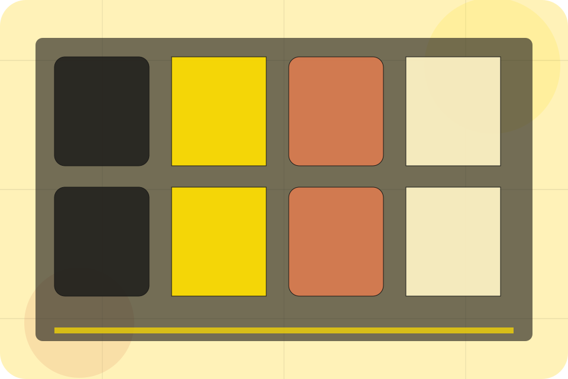
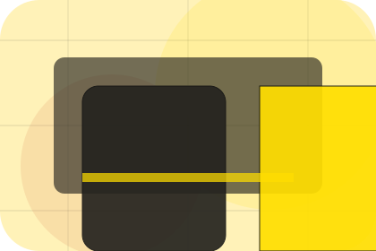
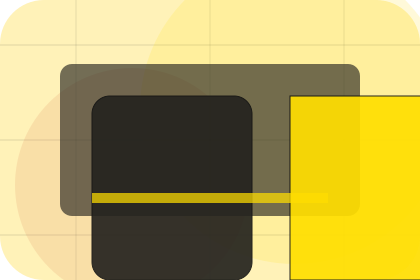
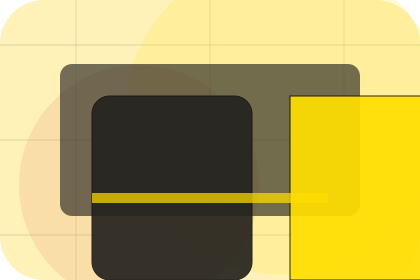
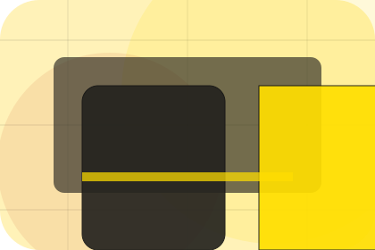

Brand / 01
Brand by Linea
Brand shaped for fashion, apparel & accessories decisions.
Brand opens as a clear fashion decision hub: what Linea offers, who it helps, why it matters, and which route to take first.
The first screen combines positioning, proof, primary action, and fast internal navigation, so people can act immediately or compare the rest of the brand route with context.
Curated indexProject contextEnquiry path
Oversized campaign hero
Browse the looks
Select the closest route and Linea keeps the next step, proof, and follow-up expectation aligned with taste, status and movement.

Brand / 02
Story inside brand
Story adds editorial context to the brand route, using the sunlit campaign lookbook structure to support taste, status and movement before visitors choose a next step.
Linea uses sunny lookbook cards and focused copy to make the decision easier to scan, aligning the section with taste, status and movement rather than filling space.
Explore Brand
Context
Story gives the page a specific angle instead of repeating the navigation label.
Judgment
The sunny lookbook cards show what to compare, what to avoid, and what matters most for fashion, apparel & accessories visitors.
Direction
The final cue points to a useful internal route so the section keeps the journey moving.
Brand / 03
Inspiration inside brand
Inspiration adds editorial context to the brand route, using the sunlit campaign lookbook structure to support taste, status and movement before visitors choose a next step.
Linea uses sunny lookbook cards and focused copy to make the decision easier to scan, aligning the section with taste, status and movement rather than filling space.
Explore BrandInspiration gives the page a specific angle instead of repeating the navigation label.
The sunny lookbook cards show what to compare, what to avoid, and what matters most for fashion, apparel & accessories visitors.
The final cue points to a useful internal route so the section keeps the journey moving.
Brand / 04
Craft inside brand
Craft adds editorial context to the brand route, using the sunlit campaign lookbook structure to support taste, status and movement before visitors choose a next step.
Linea uses sunny lookbook cards and focused copy to make the decision easier to scan, aligning the section with taste, status and movement rather than filling space.
Explore BrandContext
Craft gives the page a specific angle instead of repeating the navigation label.
Judgment
The sunny lookbook cards show what to compare, what to avoid, and what matters most for fashion, apparel & accessories visitors.
Direction
The final cue points to a useful internal route so the section keeps the journey moving.
Brand / 05
Values inside brand
Values adds editorial context to the brand route, using the sunlit campaign lookbook structure to support taste, status and movement before visitors choose a next step.
Linea uses sunny lookbook cards and focused copy to make the decision easier to scan, aligning the section with taste, status and movement rather than filling space.
Explore BrandContext
Values gives the page a specific angle instead of repeating the navigation label.
Judgment
The sunny lookbook cards show what to compare, what to avoid, and what matters most for fashion, apparel & accessories visitors.
Direction
The final cue points to a useful internal route so the section keeps the journey moving.
Brand / 06
Materials inside brand
Materials adds editorial context to the brand route, using the sunlit campaign lookbook structure to support taste, status and movement before visitors choose a next step.
Linea uses sunny lookbook cards and focused copy to make the decision easier to scan, aligning the section with taste, status and movement rather than filling space.
Explore Brand
Context
Materials gives the page a specific angle instead of repeating the navigation label.
Brand / 07
Who handles founder
Founder introduces the people, roles, or specialist credibility behind Linea so the decision feels less anonymous.
The copy ties names, roles, credentials, or availability back to the decision on the page instead of treating profiles as decorative biographies.
Explore BrandRole
The person, team, or specialist function connected to founder is easy to understand.

Credibility
Credentials, responsibilities, or availability are tied to the visitor's decision, not listed for decoration.
Handoff
The section explains how to move from profile interest to a practical conversation or booking path.
Brand / 08
Recognition inside brand
Recognition adds editorial context to the brand route, using the sunlit campaign lookbook structure to support taste, status and movement before visitors choose a next step.
Linea uses sunny lookbook cards and focused copy to make the decision easier to scan, aligning the section with taste, status and movement rather than filling space.
Explore BrandContext
Recognition gives the page a specific angle instead of repeating the navigation label.
Judgment
The sunny lookbook cards show what to compare, what to avoid, and what matters most for fashion, apparel & accessories visitors.

Direction
The final cue points to a useful internal route so the section keeps the journey moving.
Brand / 09
Trust, not claims
Trust gives the proof layer for brand: standards, evidence, and reassurance that make the next decision feel grounded.
Instead of relying on vague claims, Linea presents visible standards, process cues, and proof artifacts that help fashion visitors judge fit.
Explore BrandEvidence
Visible proof that helps visitors believe the claims behind trust.
Standard
The quality, safety, or operating expectation this section makes explicit.
Reassurance
What becomes clearer before someone decides whether to shop the collection.
Important notes before you act
Information is provided for planning and should be reviewed for the final client, location, and operating rules.